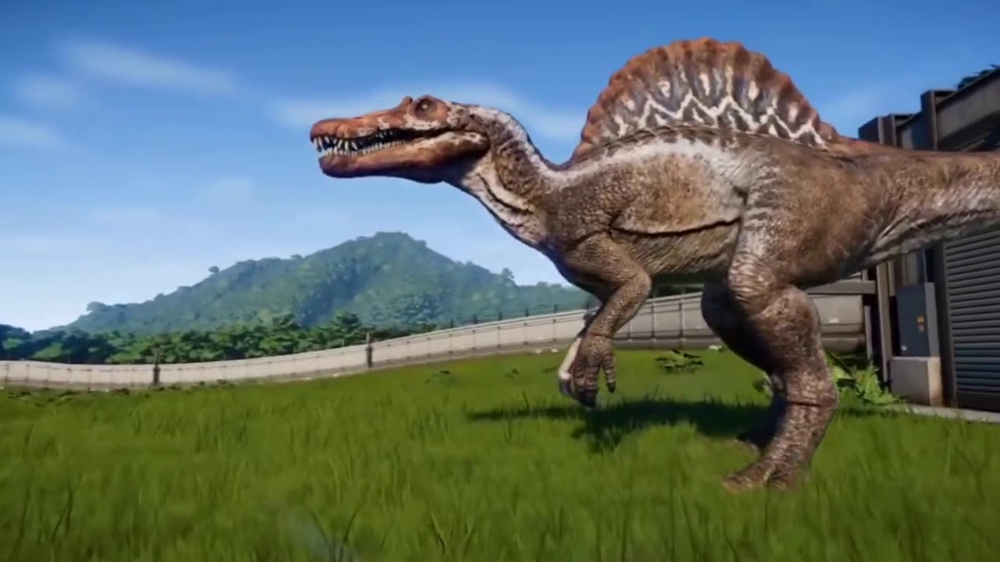

What are dinosaurs?
Dinosaurs are a group of reptiles that dominated the land for over 140 million years (more than 160 million years in some parts of the world). They evolved diverse shapes and sizes, from the fearsome giant Spinosaurus to the chicken-sized Microraptor, and were able to survive in a variety of ecosystems.
One of the reasons for dinosaurs' success is that they had straight back legs, perpendicular to their bodies. This allowed them to use less energy to move than other reptiles that had a sprawling stance like today's lizards and crocodiles.
With their legs positioned under their bodies rather than sticking out to the side, dinosaurs' weight was also better supported.
Spinosaur
Spinosaurus (meaning "spine lizard") is a genus of spinosaurid dinosaur that lived in what now is North Africa during the upper Albian to upper Turonian stages of the Cretaceous period, about 112 to 93.5 million years ago. This genus was known first from Egyptian remains discovered in 1912 and described by German paleontologist Ernst Stromer in 1915. The original remains were destroyed in World War II, but additional material has come to light in the early 21st century. It is unclear whether one or two species are represented in the fossils reported in the scientific literature. The best known species is S. aegyptiacus from Egypt, although a potential second species, S. maroccanus, has been recovered from Morocco. The contemporary spinosaurid genus Sigilmassasaurus has also been synonymized by some authors with S. aegyptiacus, though other researchers propose it to be a distinct taxon. Another possible junior synonym is Oxalaia from the Alcântara Formation in Brazil.
